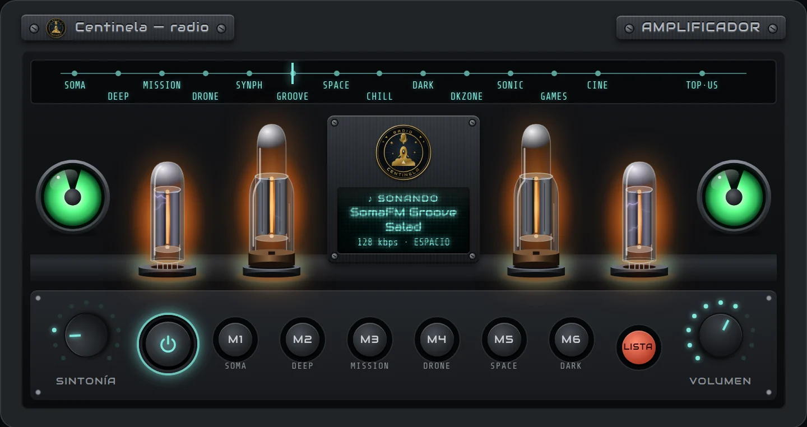
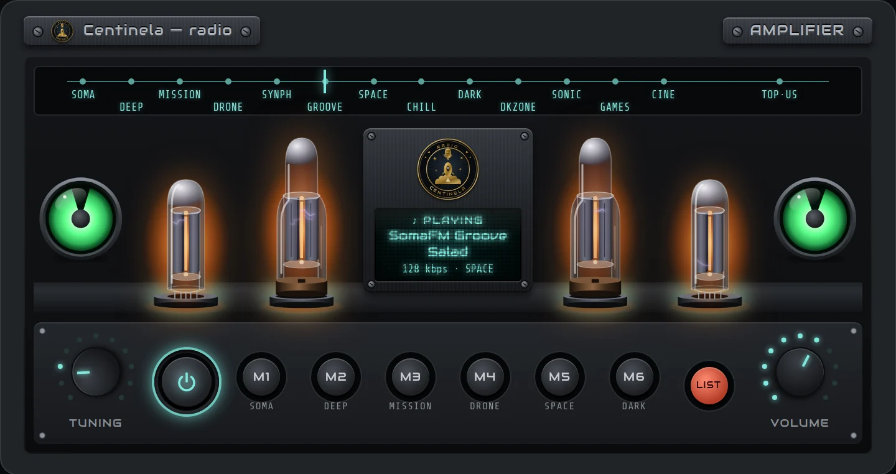

La pantalla en reposo: hora EVE, un saludo y el logo de tu corp.Standby screen: EVE time, a greeting and your corp logo.
Para exploradores: tu sistema, las puertas, tu ruta y si hay campeo en la próxima puerta.For explorers: your system, its gates, your route and whether the next gate is camped.
Al entrar a un wormhole: clase, statics, wandering posibles y los efectos del fenómeno.When you jump into a wormhole: class, statics, possible wanderings and the phenomenon's effects.
▲ intel hace 1m · 2 hostiles · por Kaelen Voss▲ intel 1m ago · 2 hostiles · by Kaelen Voss1 kill(s) · Sabre 4m · 62M ISK info
 +1
+1▲ intel hace 2m · 6 hostiles · por Kaelen Voss▲ intel 2m ago · 6 hostiles · by Kaelen Voss+6
Para ratear: amenazas y perímetro de hasta 4 saltos, con tu intel y los kills en vivo.For ratting: threats and a perimeter of up to 4 jumps, with your intel and live kills.
Para capitales y jump freighters: ruta de saltos parando solo donde podés dockear.For capitals and jump freighters: a jump route that only stops where you can dock.
Los sistemas, pilotos y cifras de esta vista son ilustrativos.The systems, pilots and figures in this view are for illustration only.
INSTALACIÓNINSTALLATION
DESCARGAR PARA WINDOWSDOWNLOAD FOR WINDOWS v0.4.8
Descargá el instalador con el botón de arriba y ejecutalo.Download the installer with the button above and run it.
Windows va a mostrar «Windows protegió su PC» porque el instalador no está firmado. Tocá Más información y después Ejecutar de todas formas.Windows will show “Windows protected your PC” because the installer isn’t signed. Click More info and then Run anyway.
Abrí Centinela, girá la perilla de encendido a ON y entrá en ⚙ para iniciar sesión con tu cuenta de EVE.Open Centinela, turn the power knob to ON and go to ⚙ to log in with your EVE account.
Si tu personaje es de Sigma Grindset, la perilla de modo se desbloquea y ya podés usar todos los modos. Si no lo es, la app queda bloqueada en DISPLAY OFF.If your character is in Sigma Grindset, the mode knob unlocks and you can use every mode. If not, the app stays locked on DISPLAY OFF.
Desde la 0.4.0 Centinela se actualiza sola: descarga la versión nueva en segundo plano y la instala cuando la cerrás. Si tenés la 0.3.0 o una anterior, instalá esta una vez a mano, encima de la que tenés. Tu configuración se mantiene.Since 0.4.0 Centinela updates itself: it downloads the new version in the background and installs it when you close it. If you have 0.3.0 or older, install this one manually once, over the one you have. Your settings are kept.
DESCARGAR PARA LINUXDOWNLOAD FOR LINUX AppImage
Con el botón de arriba, bajá Centinela-x.y.z.AppImage. Es un solo archivo, sin instalación: dejalo en una carpeta fija (por ejemplo ~/Aplicaciones), porque las actualizaciones reemplazan ese mismo archivo.With the button above, download Centinela-x.y.z.AppImage. It's a single file, nothing to install: keep it in a fixed folder (for example ~/Applications), because updates replace that same file.
Dale permiso de ejecución (ver abajo cómo en tu escritorio) o, en una terminal, chmod +x Centinela-*.AppImage.Make it executable (see below for your desktop) or, in a terminal, chmod +x Centinela-*.AppImage.
Abrilo con doble clic y seguí como en Windows: perilla de encendido a ON y ⚙ para iniciar sesión con EVE.Open it with a double click and carry on as on Windows: power knob to ON and ⚙ to log in with EVE.
Funciona tal cual en Fedora 43 con KDE y EVE por Steam/Proton, sin instalar nada aparte.Works as is on Fedora 43 with KDE and EVE through Steam/Proton, with nothing extra to install.
KDE: clic derecho → Propiedades → Permisos → Es ejecutable. GNOME: clic derecho → Propiedades → Ejecutable como programa.KDE: right click → Properties → Permissions → Is executable. GNOME: right click → Properties → Executable as Program.
Falta FUSE (raro en un escritorio normal): sudo dnf install fuse-libs.FUSE is missing (rare on a normal desktop): sudo dnf install fuse-libs.
Si no habla: sudo dnf install speech-dispatcher espeak-ng.If it doesn't speak: sudo dnf install speech-dispatcher espeak-ng.
En KDE, para que quede encima de EVE a pantalla completa hace falta xprop (suele venir): sudo dnf install xprop.On KDE, staying above EVE in fullscreen needs xprop (usually installed): sudo dnf install xprop.
Todavía nadie la probó en Ubuntu. Estos pasos son los conocidos para apps como esta; si algo falla, avisale a SLAMes.Nobody has tried it on Ubuntu yet. These steps are the known ones for apps like this; if something fails, tell SLAMes.
Ubuntu no trae lo que necesita un AppImage para abrirse: sudo apt install libfuse2t64 (24.04 o más nuevo) o sudo apt install libfuse2 (22.04). Sin esto, el doble clic no hace nada.Ubuntu lacks what an AppImage needs to open: sudo apt install libfuse2t64 (24.04 or newer) or sudo apt install libfuse2 (22.04). Without it, double clicking does nothing.
Archivos: clic derecho → Propiedades → Ejecutable como programa.Files: right click → Properties → Executable as Program.
En 24.04 o más nuevo puede cerrarse al abrir, con un error sobre el SUID sandbox si lo abrís desde una terminal. Abrila así: ./Centinela-*.AppImage --no-sandbox. Eso apaga una protección de Chromium pensada para navegar por sitios desconocidos; Centinela solo muestra sus propias pantallas y el login de EVE.On 24.04 or newer it may close right after opening, with an error about the SUID sandbox if you start it from a terminal. Start it like this: ./Centinela-*.AppImage --no-sandbox. That turns off a Chromium protection meant for browsing unknown sites; Centinela only shows its own screens and the EVE login.
Si no habla: sudo apt install speech-dispatcher espeak-ng.If it doesn't speak: sudo apt install speech-dispatcher espeak-ng.
Encuentra sola la carpeta de logs de EVE por Steam/Proton (Steam normal o Flatpak). Si no, ⚙ → Canales de intel → Elegir carpeta....Finds EVE's log folder under Steam/Proton on its own (regular or Flatpak Steam). If not, ⚙ → Intel channels → Choose folder....
Un AppImage no aparece en el menú de aplicaciones. Si la querés ahí, Gear Lever (en Flathub) la agrega con su ícono.An AppImage doesn't show up in the app menu. If you want it there, Gear Lever (on Flathub) adds it with its icon.
Se actualiza sola como en Windows: baja la versión nueva y la instala al cerrar la app.It updates itself like on Windows: it downloads the new version and installs it when you close the app.
MANUAL
Todo se maneja desde la barra de abajo del monitor, como en un tablero de nave: la pantalla es solo para leer.Everything is operated from the bar below the monitor, like a ship's console: the screen is read-only.
Prende y apaga la computadora, con su secuencia de arranque y de apagado. También con la rueda del mouse encima: hacia arriba enciende, hacia abajo apaga.Turns the computer on and off, with its boot and shutdown sequence. Also with the mouse wheel over it: up turns it on, down turns it off.
Cambia de modo con cada giro, o con la rueda del mouse encima. El modo activo se ve en negativo. Solo gira con la sesión iniciada y siendo de Sigma Grindset.Changes mode with each turn, or with the mouse wheel over it. The active mode is shown highlighted. It only turns when you're logged in and in Sigma Grindset.
Verde parpadeando: está escuchando tus canales de intel. Amarillo, rojo o rojo estroboscópico: hay una alerta (ver Alertas). Apagado: no está vigilando.Blinking green: listening to your intel channels. Yellow, red or strobing red: there is an alert (see Alerts). Off: not watching.
Achica Centinela a una ventanita siempre encima del juego, para quien juega con un solo monitor (ver Alertas).Shrinks Centinela to a small always-on-top window over the game, for single-monitor players (see Alerts).
Abre el sintonizador encima de la pantalla, desde cualquier modo: dial con aguja, VU meters que se mueven con la música, 9 emisoras espaciales y el top de EE.UU. Seis memorias (M1–M6) como la radio de un auto: mantené apretada una para guardar la que suena. Al cerrarlo sigue sonando mientras jugás; baja sola cuando suena una alarma. El puntito verde indica que está sonando. Cómo se usa, en Radio.Opens the tuner over the screen, from any mode: a dial with a needle, VU meters that move with the music, 9 space stations and the US top charts. Six presets (M1–M6) like a car radio: press and hold one to save the station playing. Close it and it keeps playing while you fly; it ducks on its own when an alarm sounds. The little green light means it's playing. How to use it: see Radio.
Retroilumina los controles para usarlos a oscuras, como la luz de una cabina. El puntito verde indica que está prendida.Backlights the controls so you can use them in the dark, like a cockpit light. The little green light means it's on.
Iniciar sesión con EVE, skin de facción, voz, perímetro de RADAR, canales de intel, versión (con las novedades), apoyo y sugerencias. Un puntito azul avisa que hay una actualización lista.EVE login, faction skin, voice, RADAR perimeter, intel channels, version (with the changelog), support and feedback. A little blue light means an update is ready.
Se cambia de modo girando la perilla, como en un panel físico. Antes hay que iniciar sesión con EVE desde ⚙.You switch modes by turning the knob, like on a physical panel. First log in with EVE from ⚙.
En reposo: la pantalla muestra la hora EVE y te saluda. Es donde arranca la perilla al encender.Standby: the screen shows EVE time and greets you. This is where the knob starts when you power on.
El sistema en el que estás, su seguridad, tu nave y las puertas a los vecinos, con los kills de la última hora en cada uno. Planificá una ruta (también por Ansiblex) y mandala al juego: te marca los kills de cada sistema por delante y avisa de un posible campeo en la próxima puerta, mirando los dos lados del salto. Escucha tu intel sobre tu sistema, los vecinos y los próximos de la ruta.The system you're in, its security, your ship and the gates to neighboring systems, with the last hour's kills in each. Plan a route (Ansiblex included) and send it to the game: it marks the kills in every system ahead and warns you of a possible gate camp at the next gate, checking both sides of the jump. It listens to your intel about your system, its neighbors and the next systems on the route.IDEAL PARAIDEAL FOR exploradores de null sec. Te avisa de lo que pasa en tu sistema y en tu ruta, y de un posible campeo en la próxima puerta antes de saltar.null sec explorers. It warns you about what's happening in your system and along your route, and about a possible gate camp at the next gate before you jump.
Al entrar en un wormhole: clase, fenómeno y sus efectos, la static (destino, duración y masa) y los wandering que pueden aparecer. Funciona sin internet, con datos oficiales de Fenris Creations (antes CCP Games).When you enter a wormhole: class, phenomenon and its effects, the static (destination, lifetime and mass) and the wanderings that can spawn. Works offline, with official data from Fenris Creations (formerly CCP Games).IDEAL PARAIDEAL FOR quien se mueve por J-space. Sabés dónde estás, por dónde podés salir y qué penalizaciones o bonificaciones te da el clima del sistema.anyone roaming J-space. You know where you are, where you can get out, and which penalties or bonuses the system's environment gives you.
El perímetro de hasta 4 saltos alrededor tuyo. Vigila tus canales de intel y los kills en vivo, muestra quién reportó y a qué hostiles, y suma las recompensas de la sesión.The perimeter up to 4 jumps around you. It watches your intel channels and live kills, shows who reported which hostiles, and adds up your session bounties.IDEAL PARAIDEAL FOR los aficionados al grindeo en null sec. Te avisa de las amenazas que se acercan mientras rateás.null sec grinders. It warns you of incoming threats while you're ratting.
Ruta de saltos con jump drive: elegís origen, destino, nave y skills, y te arma la ruta de cynos parando solo donde podés dockear (estaciones NPC o estructuras a las que tu personaje tiene acceso), mejor en estructuras. Con los años luz y el combustible de cada salto.Jump drive routes: pick origin, destination, ship and skills, and it builds the cyno route stopping only where you can dock (NPC stations or structures your character has access to), preferring structures. With the light years and fuel for each jump.IDEAL PARAIDEAL FOR quien necesita planificar saltos con jump drive: capitales, jump freighters o black ops. Sabés si llegás y dónde dockear antes de prender el primer cyno.anyone planning jump drive trips: capitals, jump freighters or black ops. You know whether you can make it and where to dock before the first cyno is lit.
Cuando un mensaje de intel o un kill nombra un sistema de tu perímetro, suena una alarma, se enciende el LED del marco y la pantalla muestra la alerta durante 5 segundos. La gravedad depende de la distancia.When an intel message or a kill names a system in your perimeter, an alarm sounds, the frame LED lights up and the screen shows the alert for 5 seconds. Severity depends on distance.
2+ saltos.2+ jumps. Doble pitido suave y LED amarillo. Actividad en el perímetro, para estar atento.Soft double beep and yellow LED. Activity in the perimeter, stay alert.
1 salto.1 jump. Tres pares de tonos y LED rojo. Hay enemigos al lado.Three pairs of tones and red LED. Hostiles next door.
Tu sistema.Your system. Sirena y LED rojo estroboscópico. Hay enemigos donde estás.Siren and strobing red LED. Hostiles where you are.
Los mensajes con «clr» o «clear» no hacen sonar la alarma: marcan el sistema como limpio.Messages with “clr” or “clear” don’t trigger the alarm: they mark the system as clear.
En MONITOR, con una ruta marcada, un posible campeo en la próxima puerta (kills recientes a menos de 100 km de la puerta, de este lado o del otro) suena como PELIGRO.In MONITOR, with a route set, a possible gate camp at the next gate (recent kills within 100 km of the gate, on this side or the other) sounds as DANGER.
¿Jugás con un solo monitor? Tocá el botón ▭ de la barra y Centinela se achica a una ventanita siempre encima del juego. En reposo muestra solo el LED; con una alerta se agranda unos segundos con el color de la gravedad y dónde es («1j HY-RWO · 5 hostiles»). El botón de la ventanita la vuelve a agrandar, y si tenés la radio puesta, el botón de la nota la pausa o la vuelve a poner. Jugá en ventana o en Fixed Window: en pantalla completa el juego la tapa.Playing on a single monitor? Press the ▭ button on the bar and Centinela shrinks to a small always-on-top window over the game. At rest it only shows the LED; with an alert it takes on the severity color for a few seconds and says where («1j HY-RWO · 5 hostiles»). The window button brings it back to full size, and if the radio is on, the music note button pauses or resumes it. Play in windowed or Fixed Window mode: in fullscreen the game covers it.
Un receptor hi-fi de los 70 dentro de Centinela, para escuchar música mientras jugás. Se abre con el botón de la radio del marco, desde cualquier modo, y al cerrarlo sigue sonando.A 70s hi-fi receiver inside Centinela, for music while you play. Open it with the radio button on the frame, from any mode; close it and it keeps playing.


Un clic pasa a la emisora siguiente. Con la rueda del mouse encima, siguiente o anterior. La aguja roja del dial se desliza hasta la que suena.One click moves to the next station. With the mouse wheel over it, next or previous. The red dial needle slides to the station playing.
Rueda del mouse encima, o arrastrar hacia arriba o abajo. Un clic apaga o prende la música, como la radio de un auto.Mouse wheel over it, or drag up or down. One click turns the music off or on, like a car radio.
Apaga o prende la música. Mientras suena, el símbolo brilla; apagada, la luz ámbar del frente baja y queda en reposo.Turns the music off or on. While it plays the symbol glows; when it's off, the amber front light dims to standby.
Memorias, como la radio de un auto: un clic pone la emisora guardada; mantené apretada una tecla un momento para guardar ahí la que está sonando. Vienen 6 emisoras espaciales de fábrica.Presets, like a car radio: one click plays the saved station; press and hold a key for a moment to save the station playing there. Six space stations come preset.
Muestra todas las emisoras en lugar de los VU: primero las espaciales y después el top de EE.UU. Tocá una para ponerla.Shows every station in place of the VU meters: the space stations first, then the US top charts. Tap one to play it.
Dice qué suena. Tocarlo también apaga o prende la música.Shows what's playing. Tapping it also turns the music off or on.
Se mueven con el nivel real de la música. En algunas emisoras del top no se puede leer el nivel y se mueven con una animación.They follow the music's real level. On some top-chart stations the level can't be read, so they move with an animation.
La música sigue sonando aunque cierres la radio o cambies de modo, y baja sola mientras suena una alarma. Se corta al apagar la compu. Con la ventanita de alertas, el botón de la nota la pausa sin volver a agrandar Centinela.The music keeps playing when you close the radio or switch modes, and it ducks on its own while an alarm sounds. It stops when you power the computer off. With the alert pill, the note button pauses it without bringing Centinela back.
En EVE, activá Log chat to file en la configuración de chat. Sin eso el juego no guarda los mensajes y Centinela no tiene qué leer.In EVE, enable Log chat to file in the chat settings. Without it the game doesn't save messages and Centinela has nothing to read.
Abrí en el juego los canales de intel que querés vigilar.Open the intel channels you want to watch in the game.
En Centinela, entrá en ⚙ → Canales de intel y marcá los tuyos. Si no aparece la carpeta de logs, usá Elegir carpeta....In Centinela, go to ⚙ → Intel channels and tick yours. If the log folder isn't found, use Choose folder....
Pasá a modo RADAR o MONITOR. El LED verde parpadeando indica que está escuchando.Switch to RADAR or MONITOR mode. The blinking green LED means it is listening.
NOVEDADESWHAT'S NEW
Lo nuevo de cada versión. Centinela se actualiza sola al cerrarla; en ⚙ → Versión ves cuál tenés.What's new in each version. Centinela updates itself when you close it; ⚙ → Version shows which one you have.
Abierta a toda la alianza Sigma Grindset, y ahora en inglés (⚙ → Idioma). MONITOR para exploradores: planificá una ruta (también por Ansiblex) y mandala al juego; avisa de posibles campeos en la próxima puerta y escucha tu intel. Radio nueva: botón propio en el marco con un sintonizador retro y 9 emisoras espaciales, y sigue sonando en todos los modos; su luz se enciende y se apaga como un equipo de verdad. Las perillas ahora también giran con la rueda del mouse. Skins retroiluminadas con colores nuevos. Look Triglavian en las pantallas y el arranque, y skin Triglavian en ⚙. El modo RATEO ahora se llama RADAR. Arreglado un bloqueo de zKillboard que podía dejar sin kills en vivo hasta una hora. Versión para Linux (AppImage), que también se actualiza sola. Sugerencias desde la app (⚙ → Sugerencias): llegan a SLAMes como EVE mail. Arreglado WH NAV: en púlsar y Wolf-Rayet las resistencias salían en positivo y en realidad bajan.Open to the whole Sigma Grindset alliance, and now in English (⚙ → Language). MONITOR for explorers: plan a route (Ansiblex included) and send it to the game; it warns of possible gate camps at the next gate and listens to your intel. New radio: its own button on the frame with a retro tuner and 9 space stations, and it keeps playing in every mode; its light warms up and dims like real hardware. The knobs now also turn with the mouse wheel. Backlit skins with new colors. Triglavian look on the screens and the boot sequence, and a Triglavian skin in ⚙. RATEO mode is now called RADAR. Fixed a zKillboard block that could leave you without live kills for up to an hour. Linux version (AppImage), which also updates itself. Feedback from the app (⚙ → Feedback): it reaches SLAMes as an EVE mail. Fixed WH NAV: on pulsar and Wolf-Rayet systems resistances were shown as a bonus when they actually go down.
Versiones anterioresOlder versions
Modo JUMP NAV: ruta de saltos con jump drive (capitales, jump freighters, black ops) parando solo donde podés dockear, mejor en estructuras, con años luz y combustible de cada salto. Para que vea tus estructuras, cerrá sesión y volvé a entrar una vez en ⚙.JUMP NAV mode: jump drive routes (capitals, jump freighters, black ops) stopping only where you can dock, preferring structures, with light years and fuel for each jump. For it to see your structures, log out and back in once in ⚙.
La ventanita de alertas tiene siempre el mismo tamaño, así no salta cuando llega una alerta. En reposo es negra y dice si está vigilando.The alert pill always keeps the same size, so it doesn't jump when an alert comes in. At rest it's black and shows whether it's watching.
Ventanita de alertas para quien juega con un solo monitor: el botón ▭ achica Centinela a una ventanita siempre encima del juego que solo se agranda con una alerta. En ⚙ → Versión, link a estas novedades, y después de cada actualización la pantalla avisa qué hay de nuevo. En ⚙ → Apoyo, cómo sumarte a la Tripulación de Honor.Alert pill for single-monitor players: the ▭ button shrinks Centinela to a small always-on-top window over the game that only grows with an alert. In ⚙ → Version, a link to this changelog, and after each update the screen tells you what's new. In ⚙ → Support, how to join the Honor Crew.
Alarmas más fuertes. Las de intel y kills suenan bastante más; se ajustan en ⚙ → Volumen de alarma, con un botón Probar.Louder alarms. Intel and kill alarms are much louder; adjust them in ⚙ → Alarm volume, with a Test button.
Las pestañas de modo son una franja de lado a lado, el LED de ALERTA está en el centro del marco y los botones 💡 y ⚙ más separados.The mode tabs are now a full-width strip, the ALERT LED sits in the middle of the frame and the 💡 and ⚙ buttons are further apart.
La posición elegida de cada perilla se ve en negativo, rellena con el color de tu skin.Each knob's selected position is shown highlighted, filled with your skin's color.
Arreglos del intel: aparecen los retratos de los hostiles, «Fulano +1» cuenta 2, «status?» ya no alarma y los seguimientos sin nombres conservan los pilotos ya reportados.Intel fixes: hostile portraits now show up, «Someone +1» counts as 2, «status?» no longer triggers an alarm and follow-ups without names keep the pilots already reported.
Actualización automática: busca versiones nuevas, las descarga sola y las instala al cerrar la app. Ledcito azul en ⚙ cuando hay una lista.Automatic updates: it checks for new versions, downloads them on its own and installs them when you close the app. A little blue light on ⚙ when one is ready.
Intel con quién reportó y retratos de los hostiles, «clr» marca el sistema como limpio, AMENAZAS incluye reportes de intel y ⚙ ordenado como tabla.Intel shows who reported and hostile portraits, «clr» marks the system as clear, THREATS includes intel reports and ⚙ is laid out as a table.
PREGUNTASFAQ
Sí. No toca el cliente ni automatiza nada. Solo lee la API oficial del juego (ESI, de Fenris Creations) y los archivos de chat que el propio juego guarda en tu PC. Los kills vienen de zKillboard.Yes. It doesn't touch the client or automate anything. It only reads the game's official API (ESI, by Fenris Creations) and the chat log files the game itself saves on your PC. Kills come from zKillboard.
No funciona. La app se instala y enciende, pero después de iniciar sesión queda bloqueada en DISPLAY OFF. El acceso depende de la alianza del personaje con el que entrás, no de la cuenta: si tenés alts fuera de Sigma Grindset, iniciá sesión con uno que esté dentro.It won't work. The app installs and powers on, but after logging in it stays locked on DISPLAY OFF. Access depends on the alliance of the character you log in with, not the account: if you have alts outside Sigma Grindset, log in with one that's inside.
Lectura de los datos de tu personaje, todos juntos para no volver a pedirlos con cada función nueva. Hoy usa la ubicación, la nave, la corporación y la billetera para las recompensas.Read access to your character's data, all at once so it doesn't have to ask again with each new feature. Today it uses location, ship, corporation and wallet (for bounties).
Sí, desde la 0.4.8: un AppImage. Mirá Instalar → Linux.Yes, since 0.4.8: an AppImage. See Install → Linux.
Sí, desde la 0.4.0. Descarga la versión nueva sola y la instala al cerrar la app, sin cortarte en medio de una sesión. En ⚙ → Versión ves en qué versión estás, y si hay una lista podés tocar Reiniciar y actualizar.Yes, since 0.4.0. It downloads the new version on its own and installs it when you close the app, without interrupting you mid-session. ⚙ → Version shows which version you're on, and if one is ready you can click Restart and update.
SUGERENCIASSUGGESTIONS
![Retrato de SLAMes]()
¿Una idea, un error o algo que te gustaría ver en Centinela? Mandale un EVE Mail a SLAMes, o escribilo desde la propia app: ⚙ → Sugerencias → Escribir a SLAMes. Sale como EVE mail de tu personaje, con un asunto que lo identifica y la versión de Centinela y tu sistema operativo al pie, así no hace falta preguntártelos. Todas las funciones de la app salieron de pedidos así.An idea, a bug or something you'd like to see in Centinela? Send an EVE Mail to SLAMes, or write it from the app itself: ⚙ → Feedback → Write to SLAMes. It goes out as an EVE mail from your character, with a subject that tags it and your Centinela version and operating system at the bottom, so nobody has to ask. Every feature in the app came from requests like that.